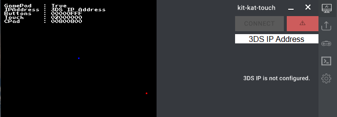
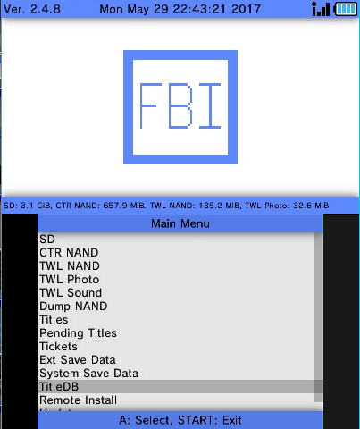
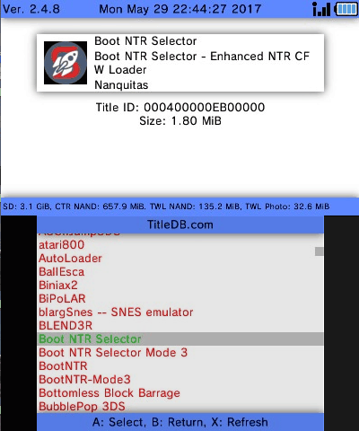
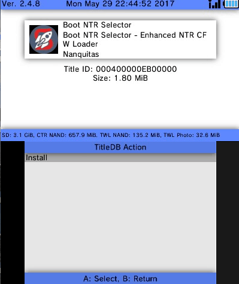
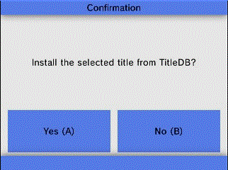
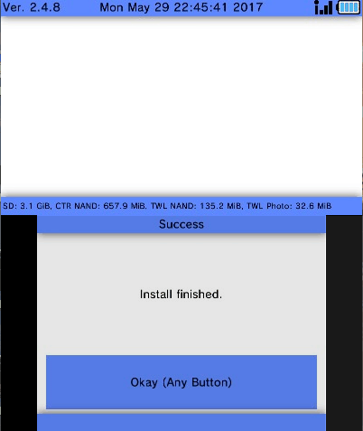
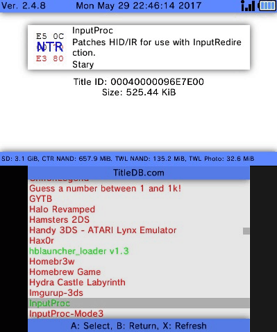
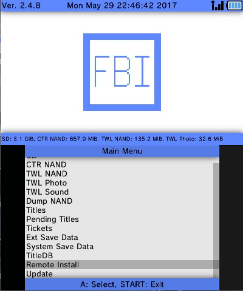
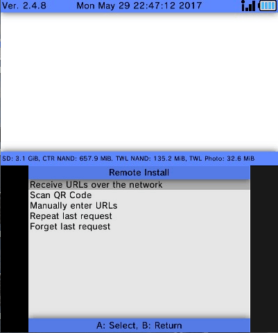
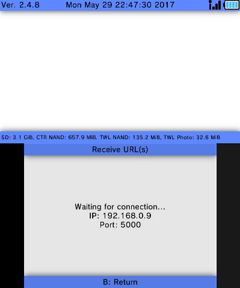

A Fork of the
MEGA toolkit chain
kit-kat.exe by
http://twitter.com/Pr4gma
Featuring:
Featuring:
- Redesigned UI, more Compact & built around InputRedirectionClient + Joy2Key & Vitrite
- Wireless Video Streaming to PC with NTR CFW + NTRViewer.exe
- Xbox Gamepad Support (Control your 3DS over Wifi with any XInput Controller)
- Ability to Control 3DS Touchscreen w/ Mouse Input
(Must
be used with Open Source Programs to achieve full feature list)
Logo:
 |
User Interface:

Demo GIF:

Video Tutorial:
How to Setup (part 1) - BootNTR & InputProc Installation
On your 3DS:
- Download/Install "InputProc" and "BootNTR Selector" from titleDB in FBI





- Do the same for InputProc

- Tap Remote Installer in FBI -> Tap "Receive URLs over the Network" -> Copy your 3DS IP Address



- Open InputProc -> Open BootNTR Selector -> Wait until its back to the Home menu.
You must Open "InputProc" and "BootNTR Selector" everytime you restart your n3DS & want to use kit-kat
Continue to: Setting Up kit-kat-touch (part 2)
This Wouldn't be possible without all these Epic People - Make
sure to Show them some Love
Ryan VanMiddlesworth@: http://vanmiddlesworth.org/vitrite/
Kazo @:
https://github.com/Kazo/InputRedirectionClient
Stary2001 @: https://github.com/Stary2001/InputRedirection
Stary2001 @: https://github.com/Stary2001/InputRedirection
For all things GameInCanada related Visit: http://www.nintend.news